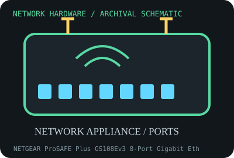

[ MODEL-SPECIFIC NETWORK HARDWARE RECORD ]
NETGEAR ProSAFE Plus GS108Ev3 8-Port Gigabit Ethernet Switch
Eight-port unmanaged-at-L2/Plus-managed Gigabit copper switch with VLAN and QoS controls. This record identifies the stated model/revision; visually similar products may use different silicon or firmware.

IDENTIFICATION: Verify the full label, board revision, vendor/device IDs and regulatory markings before selecting firmware or drivers. Nominal PHY/link rates below are not measured application throughput.
Specifications and compatibility
| Subcategory | Network appliances: routers, access points & switches |
|---|---|
| Exact model | NETGEAR ProSAFE Plus GS108Ev3 8-Port Gigabit Ethernet Switch |
| Interface and connector | Eight 10/100/1000BASE-T RJ-45 auto-negotiating ports; fanless desktop metal chassis; external power adapter. |
| Controller / PHY / radio | Store-and-forward switching ASIC with 802.1Q VLAN, QoS and traffic-monitoring features via model-specific Plus management software/web interface. |
| Nominal throughput (not a test) | Eight 1 Gb/s full-duplex ports (16 Gb/s aggregate switching capacity commonly specified); aggregate fabric rating is not measured end-to-end throughput. |
| Measured throughput | Not bench-tested here. Measure forwarding with stated packet sizes, port pairs, duplex, VLAN setup and test equipment; Internet speed is not a switch benchmark. |
| Driver / OS / firmware | No host NIC driver; configuration uses NETGEAR Plus utility and/or supported browser interface depending on firmware. OS support for legacy configuration utilities may be limited; retain current firmware and setup documentation. |
| Compatibility | Requires Gigabit copper peer devices and Cat 5e-or-better cabling. VLAN tagging and QoS require matching configuration on routers/hosts; verify adapter power-supply voltage and polarity from label. |
| Variant warning | GS108Ev3 is distinct from GS108 (unmanaged), GS108E v1/v2 and newer GS108E/GS108Ev4 revisions. Firmware, web UI, power adapter and management method vary; switch ports are not PoE. |
Variant and operating notes
GS108Ev3 is distinct from GS108 (unmanaged), GS108E v1/v2 and newer GS108E/GS108Ev4 revisions. Firmware, web UI, power adapter and management method vary; switch ports are not PoE.
No host NIC driver; configuration uses NETGEAR Plus utility and/or supported browser interface depending on firmware. OS support for legacy configuration utilities may be limited; retain current firmware and setup documentation.
Throughput policy: vendor/standard rates are labeled nominal. This archive includes no measured benchmark for this specimen; do not interpret a link rate or aggregate port capacity as sustained payload performance.
Archival, ESD and preservation notes
Record revision, MAC, serial, firmware, power-supply label, VLAN configuration and port test results. Unplug before cleaning, avoid liquids in RJ-45 ports and store dry with the original adapter separately labeled.
Preserve the exact model/revision, serial/date code, firmware and driver versions, accessories, condition, source provenance, and source-document revision. Never retain access credentials or undocumented secrets in the public catalog.
Manufacturer and standards sources
- NETGEAR GS108Ev3 product/support pageManufacturer or standards reference; match the complete model/revision before applying specifications.
- NETGEAR GS108E documentation and downloadsManufacturer or standards reference; match the complete model/revision before applying specifications.
- IEEE 802.3 Ethernet standardsManufacturer or standards reference; match the complete model/revision before applying specifications.
Source coverage can be family-level; manufacturer documentation for the exact part number and hardware revision takes precedence. Standards describe protocol behavior, not a promise of real-world performance.